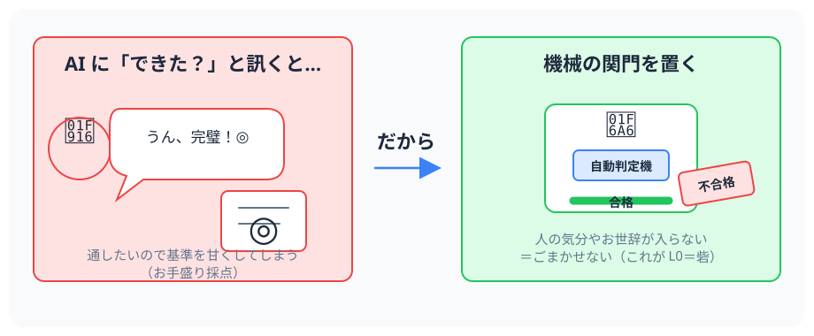
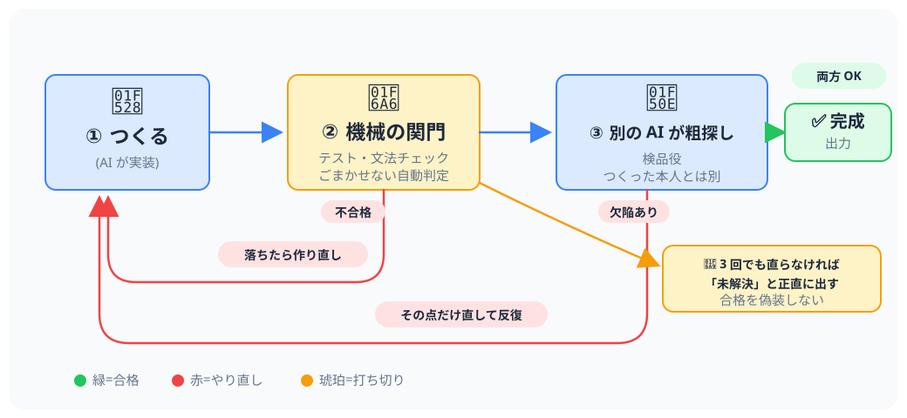
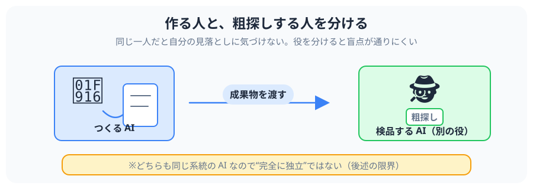

プログラミングを知らなくても分かる、やさしい解説
AI にものづくり（おもにプログラム作り）を任せると、AI はつい「できたつもり」で 甘い合格を出しがちです。loop-kit は、その出来上がりを 機械の関門と別の AI による検品に通し、 ダメなら直してやり直させる——という「段取り」を部品にしたものです。
AI プログラミング道具「Claude Code（クロード・コード）」に後付けする拡張機能（プラグイン）として配られています。 むずかしい AI の魔法ではなく、合否を機械にきちんと判定させるのが肝心、という考え方の道具です。
AI に「これで完成？」と訊くと、たいてい甘く OK を出します。 通したい一心で、自分で合格ラインをこっそり下げてしまうのです。 まるで、生徒が自分の答案を自分で採点して、ぜんぶ「◎」にしてしまうようなもの。

だから loop-kit は、人の気分やお世辞が入り込まない「機械の関門」を必ず通します。 たとえばプログラムなら、自動テスト（決めた動きを満たすか自動でチェック）や文法チェックです。 この関門を loop-kit では L0（エルゼロ）＝砦（とりで） と呼びます。
loop-kit は、下の流れを合格するまで（または上限に達するまで）くり返します。

大事な歯止め: 何回やっても直らないときは、3 回くらいで打ち切り、 「ここが未解決」と正直に出します。無理やり「合格」に見せかけません。 （くり返しは Claude Code 本体の機能が動かします。loop-kit はその「段取り」を渡す役です。）
同じ AI が「作って・自分で検品」すると、自分の見落としには気づけません。 そこで loop-kit は つくる AI と 粗探しする AI（別の役） を分けます。 これを 「つくる人 ≠ 検品する人」 といいます。

もうひとつのコツは、合格基準を先に決めて「凍結」すること。 作り始める前に「これを満たせば合格」を決めておき、後から甘くしないのです。 ゴールを動かせなくしておくのが、ごまかしを防ぐ要になります。
loop-kit には、次の 4 つの部品が入っています。
| 部品（名前） | 役わり（やさしく言うと） |
|---|---|
loopify | あなたの「ふつうの依頼文」を、合格基準つきの段取りに書き直してくれる係。 |
loop-protocol | 「つくる → 機械の関門 → 検品 → 判定」の手順書。必要なときに自動で出てくる。 |
validator | 粗探し専門の 検品 AI。仕事は「褒めること」ではなく「欠陥を見つけること」。 |
goal-loop-template | 「完成まで作り切る」ときに、感覚ではなく動かぬ証拠で縛るためのひな形。 |
入れ方は、Claude Code で
claude plugin marketplace add akihidem/claude-env-coach →
claude plugin install loop-kit@akihidem の 2 行。
くり返しを動かす本体機能（/loop、必要に応じて /goal）は Claude Code に最初から付いており、loop-kit には同梱しません。
便利な反面、過信は禁物です。作者自身が次の限界をはっきり書いています。